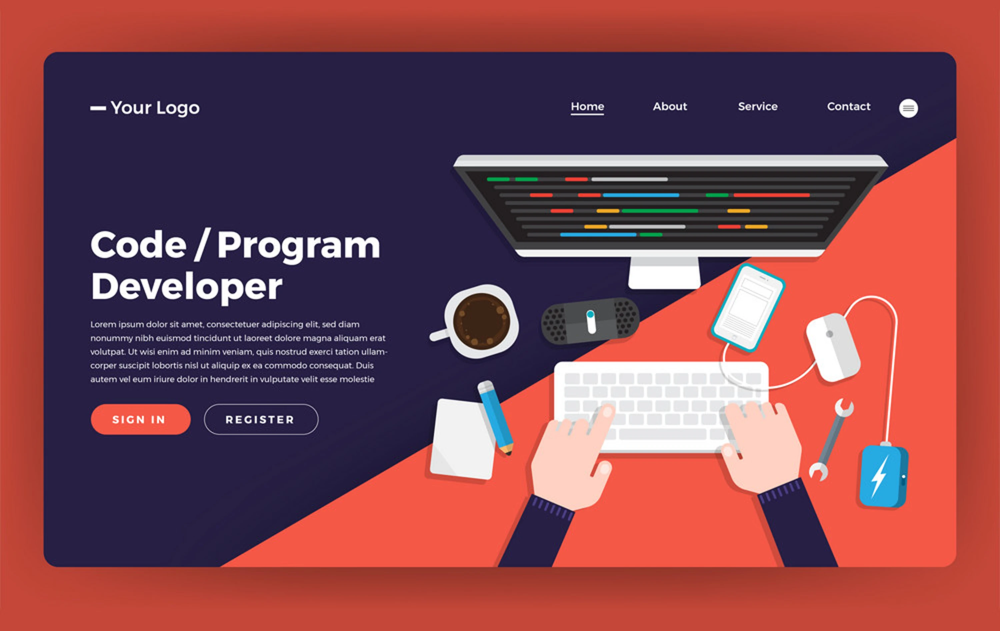

How to Make a Simple Website for your Portfolio üè∞

Imagine you’re an online creator. ✨
A web designer.
A traditional artist.
A knitter.
A video-maker.
A writer.
A consultant.
Any person who by one form of another provides a service that can be marketed online.
This means that you’ll need a way to showcase your current abilities and past work. Your future clients and buyers will need to see what you have to offer before they commit to pay you.
A portfolio will be a very powerful asset to your brand, and I stand firmly on this position.
I used to do digital illustrations extensively for ~2 years, and many of my clients reacted positively to my ever-expanding portfolio, raising my conversion noticeably.
This is an example preview, you can see my full portfolio here.
In this article, I will go through 3 ways you can build a powerful and converting portfolio for your work, using my digital illustration business as an example.
Let’s start with the most-preferred option, which is…
1. Using a Website builder
Website builders are created for people who want to have a website but do not have the coding skills necessary or just want to have an easier time drag-and-dropping their website components.
Also called “no-code tools”, these builders allow you to access a gallery of different website templates to choose from. You choose your template and then fill out your own copy, pictures, and so on.
Here are some popular examples for website builders:
- SquareSpace
- Wix.com
- WordPress
- Shopify
- Mailchimp
What are the differences between those websites? Here’s a short summary:
Squarespace
Pros:
✔ Very wide gallery of templates
✔ Easiest to use in my experience
✔ Integrations with newsletters
✔ Very easy to maintain a blog schedule
Cons:
✘ Rather expensive
✘ Limited level of customisation
✘ Rather low page speed for your website
Wix.com
Pros:
✔ Excellent site speed
✔ Almost 0 downtime, very reliable
✔ Better drag-and-drop experience than Squarespace
Cons:
✘ Can’t use analytics on a free plan
✘ Can’t transfer your website away from Wix
✘ Templates cannot be changed easily
WordPress
Pros:
✔ Most popular website builder (>40% of all websites use WordPress)
✔ Cheapest website builder on the market
✔ A very wide array of plugins
Cons:
✘ Needs to be updated very often
✘ Gets expensive when it comes to customisation
✘ More susceptible to hacks
Shopify, Mailchimp, etc.
Pros:
✔ Service is usually free when you use their other services
✔ Allows for custom domains
Cons:
✘ Website building is not the main function of the company
✘ Only a few integrations are available
2. Building one yourself (for coders)
This is the route most coders take.
Even if you aren’t a front-end developer, and you specialise in other types of coding, you would still find it easier than most people to create a simple website from scratch.
This is how I created the website on which you are reading this article (yassenshopov.com). I initially had my digital illustration website (kofiscrib.com) hosted on Squarespace, that was before I learned how to code. Then the high price of Squarespace made me reconsider 6 months ago, and since then I have kofiscrib.com as a hand-built and designed website.
Building your own website has many positives, such as:
- All the customisation you can wish for
- Endless expansion
- You control all parameters, such as the page speed
- Easily transferrable
So if you happen to wish for all these positives, BUT you can’t imagine coding a website all on your own, you can think about…